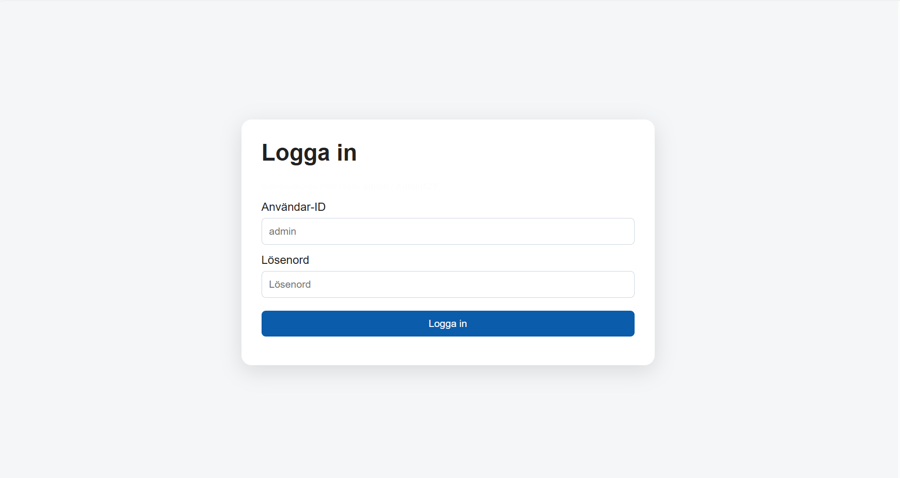

AI-drivet Ärendehanteringssystem
Ett ärendehanteringssystem som hanterar hela livscykeln för ärenden, från att ett ärende skapas tills det stängs, dokumenteras och återanvänds som kunskap.
Skärmbilder från systemet
Här visas ett urval av gränssnittet och arbetsflödet i ärendehanteringssystemet. Bildspelet kan bläddras med pilarna, tangentbordets vänster- och högerpil, eller genom att klicka på miniatyrerna.

Bildspelet följer samma upplägg som i projekt-01 men använder bilderna för projekt-02.
Vad gör applikationen?
Tjänsten är byggd för att ge handläggare ett samlat stöd i arbetet med support. Systemet samlar inkommande ärenden, gör det enkelt att följa upp status, loggar alla viktiga händelser och hjälper organisationen att återanvända tidigare lösningar i nya supportärenden.
Ärendehantering
Handläggare kan skapa ärenden manuellt eller direkt från inkommande e-post. Varje ärende innehåller löpnummer, rubrik, beskrivning, avsändare, prioritet och aktuell status.
- Ny – ärendet är registrerat men ännu inte påbörjat.
- Påbörjat – handläggning har startat.
- Väntar på användare – mer information eller återkoppling krävs.
- Löst – problemet är åtgärdat.
- Stängt – ärendet är avslutat och dokumenterat.
Händelselogg och konversation
Varje ärende har en fullständig historik där ändringar av status, kategori, handläggare eller rubrik loggas automatiskt med tidsstämpel och information om vem som gjort ändringen. Det finns även ett konversationsgränssnitt där handläggare kan svara användare externt via e-post och skriva interna anteckningar som bara kollegor ser.
AI-driven kunskapsdatabas
När ett ärende stängs sparas lösningen i en inbyggd kunskapsdatabas. När en handläggare senare söker hjälp i ett nytt ärende analyserar AI tidigare lösningar, identifierar liknande fall och föreslår en konkret väg framåt på svenska med hänvisningar till relevanta ärendenummer. Målet är att korta ned hanteringstiden och sprida kunskap automatiskt mellan handläggare.
Administration
Administratörer hanterar användare med rollerna admin, agent och viewer, skapar ärendekategorier och följer statistik över öppna och stängda ärenden.
Teknisk översikt
Backend
Skrivet i Node.js med Express. Autentisering sker via JWT-tokens i HttpOnly-cookie med 8 timmars giltighetstid, och lösenord lagras hashade med bcrypt.
Databas
Databaslagret använder SQLite via node:sqlite utan extern ORM. Tabeller finns
för användare, ärenden, historik, meddelanden, kategorier och lösningar.
E-post
E-post skickas via Nodemailer mot en konfigurerbar SMTP-server. Systemet kan automatiskt skicka statusmeddelanden till slutanvändare när ett ärende påbörjas eller besvaras.
Frontend
Frontend är byggd som en Single Page Application i ren HTML, CSS och vanilla JavaScript. Gränssnittet är responsivt, på svenska och installationsbart som PWA.
AI-integration
Backend kommunicerar direkt med AI API via /v1/messages för sökningar i
kunskapsdatabasen och strukturerade lösningsförslag.
Skalning framåt
SQLite används för snabb uppstart och enkel driftsättning. Vid större behov är planen att migrera till en mer verksamhetsanpassad databaslösning som PostgreSQL eller SQL Server.